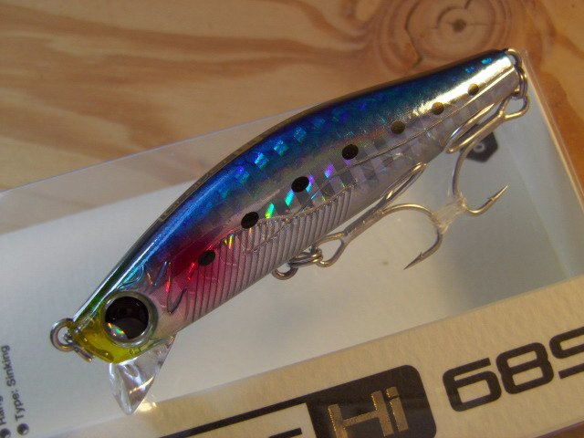
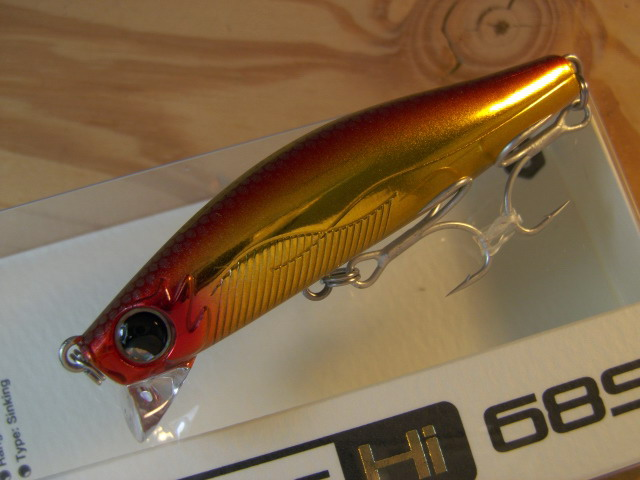
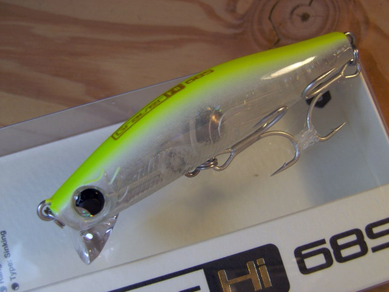
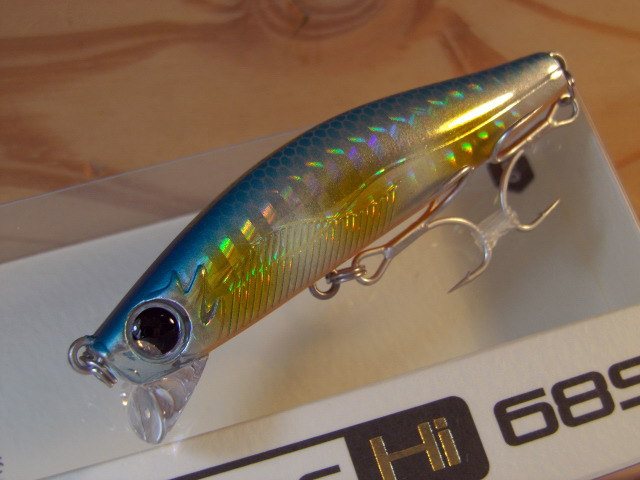
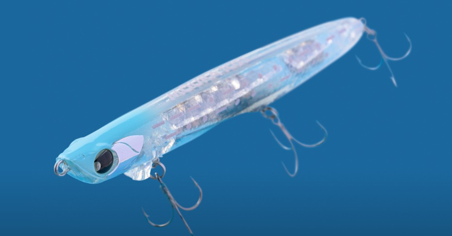

グラバーHi 68S
（Graver Hi 68S）
グラバーHi 68S（Graver Hi 68S）は邪道（JADO）のシンキングミノーです。
「高速リトリーブ、激流対応」をうたう68mmの小型ミノーで、速く巻くほど軌道がズレていく脱軌道系アクションが最大の特徴。スローに引けばシンキングペンシルのようなスローピッチのスイングに変わり、1本でシャローから約100cmまでのレンジをカバーできます。

画像出典:キングフィッシャー
スペック
- メーカー
- 邪道（JADO）
- タイプ
- シンキング
- 全長
- 68mm
- 自重
- 11g（フック無し時）
- レンジ
- 水面直下〜1.0m
- ターゲット
- シーバス
- 価格
- 2,178円（税込・定価）
▼今すぐチェック

グラバーHi 68Sの特徴
速く巻けば逃げ惑う小魚、ゆっくり巻けばシンペン。1本で2つの顔を持つ小型ミノー
-
高速リトリーブで脱軌道系アクション
ファストリトリーブ時は速くて細かい強いアクションを発生し、スピードを上げるにしたがって軌道がズレる脱軌道系アクションを演出。スモールベイトが機敏に逃げ惑う様子を再現する。
-
激流でも破綻しない安定感
激流の中でも抜群の安定感で泳ぎ切り、小型ミノーでは難しかった流れの強い場所でも使える。小型ミノーの新境地を切り開いたモデル。
-
スローではシンペンのようなスイング
ファストリトリーブでは水面直下〜約60cmのシャローを攻略でき、スローリトリーブでは約100cmのレンジをシンキングペンシルのようなスローピッチのスイングで泳ぐ。シャローランナーでは届かない、浮き切らない魚のレンジを捉えられる。
グラバーHi 68Sの使い方
基本は「速巻き」と「スロー巻き」の使い分け。活性が高い魚やベイトを追い回している状況では、ファストリトリーブで脱軌道系アクションを出し、水面直下〜60cmを引いてくる。
反応が無いときや魚が浮き切らない状況では、スローに巻いて約100cmのレンジをシンペンのようなスイングで通す。流れのある場所では、流れに乗せて送り込みながら巻きスピードでレンジを調整するのが組み立ての基本です。
グラバーHi 68Sの得意な状況
河川の流心やヨレ、潮流の速い港湾部など、流れの強い場所が最大の出番。
小型ベイトを追ってボイルが出ている状況での早巻きや、シャローランナーでは浅すぎ、バイブレーションでは強すぎるという中間レンジの攻略に強い。デイゲーム・ナイトゲームの両方を視野に開発された、幅広い状況に対応できる1本です。
ワンポイント
同じコースを「速巻き」と「スロー巻き」で1投ずつ通してみると、その日の魚がどちらに反応するかを素早く判断できます。
速巻きで反応が無くても、スローに切り替えてレンジを下げた途端に食ってくることがあるので、1本で探り切る意識で使うのがオススメです。
人気カラー
グラバーHi 68Sは全24色展開。シーバス狙いでオススメのカラーを厳選して紹介します。
 02 イワシ
02 イワシ
イワシ系のナチュラルカラー。デイゲームや澄み潮、小イワシのパターンに。

07 アカキン定番のアカキン。濁り潮やマズメなど、光量が少ない時間帯に強い。

YU-02 ハッピーレモンクリアにレモンを効かせたカラー。常夜灯周りやマイクロベイトパターンに。

09 ボラグローボラ（イナッコ）を意識したグロー入りカラー。ローライトやナイトゲームに。
画像出典:キングフィッシャー
グラバーHi 68Sに似ているルアー
-
 モアザン ガルバ73S
ダイワ
詳細はこちら＞
モアザン ガルバ73S
ダイワ
詳細はこちら＞
全長73mm・自重12.8gのリップ付きシンキングペンシル。水面直下〜20cmをスローにキープするのが得意で、グラバーHi 68Sより上のレンジをじっくり見せたいときに持ち替えたい1本。
-
 マリブ68
マングローブスタジオ
詳細はこちら＞
マリブ68
マングローブスタジオ
詳細はこちら＞
全長68mm・自重9.2gのリップ付きシンキングペンシル。同じ68mmのシルエットで、水面付近〜60cmをカウントダウンとスローリトリーブで探る。流れが緩い場所でナチュラルに見せたいときに。
-

モウラ105S ポップシークルー 詳細はこちら＞ポップシークルーのシンキングペンシル。グラバーHi 68Sより大きい105mmのシルエットで、ベイトが大きいときや飛距離が欲しいときに選びたい1本。